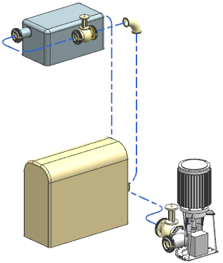
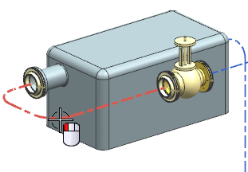
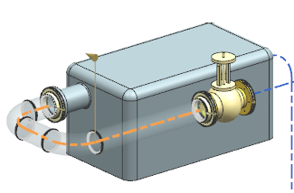
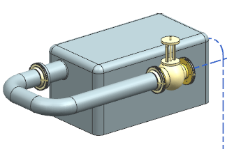
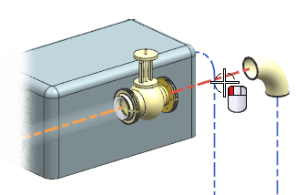
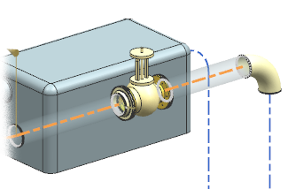
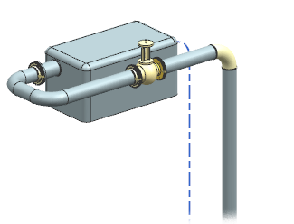

将首选型材添加到管线路径中
既然您已经选择了首选型材，那么您就可以将它添加到路径中。
-
右击视图背景并选择定向视图→定制视图→TFR_2。

-
点击关闭。
-
在机械管线布置工具条上的型材下拉菜单中，选择型材
 。
。当前型材是设置为无，您需要使用您的首选型材。
-
在型材组的型材列表中，选择首选型材。
无将被 R_ST_2448_200所替代。
-
在设置组中，确保：
样式
=
简单实体
-
在预览组中，确保已选中预览
 复选框。
复选框。 -
在选择条上的方法列表中，选择管线布置。
-
选择如图所示的管线段。

每一段相连的管线段都将高亮显示，并且在图形窗口中出现型材预览。

-
在预览组中，点击显示结果
 。
。
将在图形窗口中出现完成后的型材预览。
-
点击撤销结果
 。
。 -
选择路径中的下一条管线段。

将会显示该条管线段的型材预览。

-
选择路径中的其余管线段。

-
点击确定。

将在路径中放置三段型材。
注释
如果出现设计规则违例对话框，请点击取消。